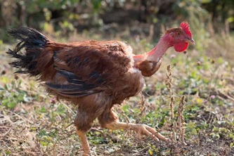

🏆 Quick Answer: Best Chickens for Hot Weather
For most backyard chicken keepers in hot climates, the best chickens for hot weather are Leghorns, Easter Eggers, Rhode Island Reds, Naked Necks, Australorps, and Plymouth Rocks. If you live in extreme dry heat or long southern summers, lighter-bodied breeds with larger combs and less dense feathering usually handle heat better than large, heavily feathered breeds.
| Best For | Recommended Breed | Why |
|---|---|---|
| Maximum heat tolerance | Leghorn | Light body, large comb, excellent egg production |
| Family backyard flock | Easter Egger | Friendly, colorful eggs, good heat tolerance |
| Southern egg production | Rhode Island Red | Hardy, dependable brown egg layer |
| Extreme hot climates | Naked Neck | Fewer feathers and better natural cooling |
| Balanced beginner flock | Plymouth Rock | Friendly, dependable, adaptable |
🚫 Chicken Breeds to Be Careful With in Extreme Heat
Some popular backyard chickens can live in warm regions, but they are not ideal choices for long periods of extreme heat. Large bodies, dense feathering, feathered legs, small combs, and heavy down can make it harder for chickens to release body heat.
| Breed Type | Why Heat Can Be Harder | Recommendation |
|---|---|---|
| Brahmas | Large body, heavy feathering, feathered legs | Avoid as a first choice for extreme southern heat |
| Cochins | Heavy feathering and large body size | Better suited for cooler climates |
| Buff Orpingtons | Gentle but large and heavily feathered | Possible with extra shade and airflow, but not ideal for extreme heat |
| Silkies | Fluffy feathering and broodiness can make summer harder | Use caution in hot, humid regions |
🐔 Looking for More Breed Comparisons?
This guide is part of our complete Chicken Breeds Hub, where you can compare the best breeds for eggs, beginners, cold weather, hot climates, dual-purpose flocks, and more.
☀️ Why Some Chickens Handle Heat Better Than Others
Hot weather can be far more stressful for chickens than many backyard keepers realize. Unlike people, chickens cannot sweat to cool themselves. Instead, they rely on panting, increased blood flow through their combs and wattles, seeking shade, and reducing activity during the hottest parts of the day.
Some breeds are naturally better equipped for warm climates because they have lighter body weights, looser feathering, and larger combs that help release excess body heat. Others—particularly large, heavily feathered breeds—may require additional care during periods of extreme heat.
If you live in Georgia, Florida, Texas, Arizona, or another region where summer temperatures regularly climb into the 90s or above, choosing a heat-tolerant breed can make a significant difference in your flock's health, comfort, and egg production.
🏆 Backyard Chicken Planner Heat Ratings
Our Heat Ratings compare breeds using the characteristics that matter most in warm climates, including heat tolerance, body size, feather density, comb type, and continued egg production during hot weather.
| Breed | Heat Score | Heat Tolerance | Summer Egg Production | Overall Recommendation |
|---|---|---|---|---|
| Leghorn | 98 / 100 | ★★★★★ | ★★★★★ | ⭐⭐⭐⭐⭐ |
| Easter Egger | 95 / 100 | ★★★★★ | ★★★★☆ | ⭐⭐⭐⭐⭐ |
| Rhode Island Red | 93 / 100 | ★★★★☆ | ★★★★★ | ⭐⭐⭐⭐⭐ |
| Australorp | 90 / 100 | ★★★★☆ | ★★★★★ | ⭐⭐⭐⭐☆ |
| Sussex | 89 / 100 | ★★★★☆ | ★★★★☆ | ⭐⭐⭐⭐☆ |
| Plymouth Rock | 88 / 100 | ★★★★☆ | ★★★★☆ | ⭐⭐⭐⭐☆ |
| Wyandotte | 84 / 100 | ★★★☆☆ | ★★★★☆ | ⭐⭐⭐⭐☆ |
| Buff Orpington | 80 / 100 | ★★★☆☆ | ★★★★☆ | ⭐⭐⭐☆☆ |
These ratings are designed to help backyard chicken keepers compare breeds based on real-world summer performance. We consider multiple factors rather than focusing on egg production alone.
🌡️ What Makes a Chicken Heat Hardy?
🪶 Lighter Feathering
Breeds with lighter feathering retain less heat and cool themselves more efficiently during hot weather.
⚖️ Smaller Body Size
Lighter birds generally handle extreme heat better than large, heavy breeds because they produce and retain less body heat.
🌺 Larger Combs & Wattles
Large combs and wattles act like natural radiators by increasing blood flow near the skin's surface, helping chickens release excess body heat. This is one reason Mediterranean breeds such as Leghorns perform so well in warm climates.
🌳 Active Shade Seeking
Heat-tolerant breeds naturally spend the hottest part of the day resting in shaded areas before returning to forage during cooler morning and evening hours.
💧 Water Consumption
Regardless of breed, chickens need constant access to clean, cool water during hot weather. Dehydration is one of the quickest ways heat stress can become dangerous.
🌴 Hot Humid vs. Hot Dry Climates
Not all hot climates create the same problems for chickens. A flock in humid Georgia or Florida may struggle with trapped moisture and poor airflow, while a flock in Arizona or Nevada may need stronger shade and more water capacity.
| Climate Type | Main Problem | Best Breed Traits | Best Choices |
|---|---|---|---|
| Hot and humid | Moisture, poor evaporation, stale coop air | Good airflow, clean legs, active shade-seeking | Leghorn, Easter Egger, Rhode Island Red, Plymouth Rock |
| Hot and dry | Direct sun, dehydration, extreme afternoon heat | Light body, large comb, strong foraging ability | Leghorn, Naked Neck, Ancona, Andalusian |
| Mixed southern climate | Hot summers with occasional winter cold | Balanced heat and cold tolerance | Rhode Island Red, Australorp, Plymouth Rock, Easter Egger |
⭐ Our Top Heat-Hardy Recommendations
| Category | Recommended Breed |
|---|---|
| Best Overall | Leghorn |
| Best Backyard Chicken | Easter Egger |
| Best Family Chicken | Australorp |
| Best Egg Producer | Rhode Island Red |
| Best Heritage Breed | Sussex |
| Best Beginner Choice | Easter Egger |
In the detailed breed profiles below, we'll explain why each breed earned its ranking and what type of backyard chicken keeper will benefit most from raising it.
🐔 Detailed Heat-Hardy Breed Profiles
These breeds consistently perform well in warm climates because of their body size, feathering, comb type, and overall ability to tolerate heat. While every flock still needs shade, fresh water, and proper ventilation, these breeds generally require less intervention during hot summers.
🥇 Leghorn

| Heat Quick Facts | Details |
|---|---|
| Heat Score | 98 / 100 |
| Eggs Per Year | 280–320 |
| Egg Color | White |
| Mature Weight | 4–6 lbs |
| Temperament | Active & Alert |
| Heat Tolerance | Excellent |
| Best For | Southern climates & maximum egg production |
Leghorns are one of the best chicken breeds for hot weather. Originally developed from Mediterranean stock, they are naturally adapted to warmer climates. Their lightweight bodies and large combs help dissipate heat efficiently, allowing them to remain active even during hot summers.
They are also among the most efficient egg layers available, making them an excellent choice for backyard keepers who prioritize production.
👍 Pros
- Excellent heat tolerance
- Very high egg production
- Excellent feed efficiency
- Thrives in southern climates
👎 Cons
- Can be flighty
- Less affectionate than heavier breeds
- Poor dual-purpose bird
🌵 Naked Neck

| Heat Quick Facts | Details |
|---|---|
| Heat Score | 96 / 100 |
| Eggs Per Year | 150–220 |
| Egg Color | Brown |
| Mature Weight | 5–7 lbs |
| Temperament | Calm and hardy |
| Heat Tolerance | Excellent |
| Best For | Extreme heat and practical backyard flocks |
Naked Neck chickens, also called Turkens, are one of the most useful hot-weather breeds because they have fewer feathers than most chickens. Their exposed neck area helps them release heat more easily, making them a practical choice for warm climates.
👍 Pros
- Excellent heat tolerance
- Fewer feathers than most breeds
- Hardy and practical
- Good choice for hot southern regions
👎 Cons
- Unusual appearance is not for everyone
- Egg production is usually lower than Leghorns or Rhode Island Reds
🥚 Easter Egger

| Heat Quick Facts | Details |
|---|---|
| Heat Score | 95 / 100 |
| Eggs Per Year | 200–280 |
| Egg Color | Blue / Green |
| Mature Weight | 5–6 lbs |
| Temperament | Friendly |
| Heat Tolerance | Excellent |
| Best For | Families and colorful egg baskets |
Easter Eggers combine good heat tolerance with friendly personalities and colorful eggs. Their lighter build and pea combs help them stay comfortable in warm weather while remaining easy birds for families to manage.
👍 Pros
- Excellent hot-weather performance
- Blue and green eggs
- Friendly temperament
- Good beginner breed
👎 Cons
- Egg production varies by individual bird
- Not recognized as a standardized breed
❤️ Rhode Island Red

| Heat Quick Facts | Details |
|---|---|
| Heat Score | 93 / 100 |
| Eggs Per Year | 250–300 |
| Egg Color | Brown |
| Mature Weight | 6–8 lbs |
| Temperament | Confident |
| Heat Tolerance | Very Good |
| Best For | Reliable egg production in warm climates |
Rhode Island Reds remain productive throughout much of the summer and adapt well to a variety of climates. While they benefit from shade and plenty of water, they generally tolerate heat better than many larger heritage breeds.
👍 Pros
- Excellent brown egg production
- Very hardy
- Good all-around backyard breed
- Low maintenance
👎 Cons
- Some birds can be assertive
- Needs shade during extreme heat
🐔 Australorp

| Heat Quick Facts | Details |
|---|---|
| Heat Score | 90 / 100 |
| Eggs Per Year | 250–300 |
| Egg Color | Brown |
| Mature Weight | 6–8 lbs |
| Temperament | Very Friendly |
| Heat Tolerance | Very Good |
| Best For | Balanced backyard flocks |
Australorps perform well across a wide range of climates, making them one of the most versatile backyard chicken breeds available. Although their black feathers absorb more sunlight, they generally tolerate heat well when provided with shade, ventilation, and cool water.
👍 Pros
- Excellent all-around breed
- Friendly personality
- Strong egg production
- Good beginner choice
👎 Cons
- Black feathers absorb more heat
- Large body benefits from extra airflow
🐓 Sussex

| Heat Quick Facts | Details |
|---|---|
| Heat Score | 89 / 100 |
| Eggs Per Year | 200–250 |
| Egg Color | Light Brown |
| Mature Weight | 6–9 lbs |
| Temperament | Friendly & Curious |
| Heat Tolerance | Good |
| Best For | Free-ranging warm-climate flocks |
Sussex chickens are active, curious birds that can do well in warm climates when they have shade and plenty of fresh water. They are especially useful for backyard keepers who want friendly chickens that forage well.
👍 Pros
- Friendly and curious
- Good foragers
- Useful dual-purpose breed
- Good family chicken
👎 Cons
- Needs shade during extreme heat
- Not as heat-specialized as Leghorns
🥉 Plymouth Rock

| Heat Quick Facts | Details |
|---|---|
| Heat Score | 88 / 100 |
| Eggs Per Year | 200–280 |
| Egg Color | Brown |
| Mature Weight | 6–8 lbs |
| Temperament | Friendly and dependable |
| Heat Tolerance | Good |
| Best For | Balanced backyard flocks |
Plymouth Rocks are dependable all-around chickens that can handle warm weather with proper care. They are not as naturally heat-adapted as Leghorns, but they remain a strong choice for many backyard flocks because of their temperament and reliability.
👍 Pros
- Friendly temperament
- Reliable brown egg production
- Good beginner breed
- Hardy and adaptable
👎 Cons
- Heavier body means they need airflow
- May slow laying during heat waves
❄️ Wyandotte

| Heat Quick Facts | Details |
|---|---|
| Heat Score | 84 / 100 |
| Eggs Per Year | 200–260 |
| Egg Color | Brown |
| Mature Weight | 6–8 lbs |
| Temperament | Calm and independent |
| Heat Tolerance | Fair to Good |
| Best For | Mixed climates, not extreme heat |
Wyandottes are excellent cold-weather birds, but they can still do reasonably well in warm climates if they have shade, ventilation, and cool water. Their dense feathering makes them less ideal for extreme southern heat than lighter breeds.
👍 Pros
- Beautiful and hardy
- Reliable layers
- Calm personality
- Good for mixed climates
👎 Cons
- Dense feathers can trap heat
- Not ideal for very hot, humid areas
🐥 Buff Orpington

| Heat Quick Facts | Details |
|---|---|
| Heat Score | 80 / 100 |
| Eggs Per Year | 200–280 |
| Egg Color | Light Brown |
| Mature Weight | 7–10 lbs |
| Temperament | Very gentle |
| Heat Tolerance | Fair |
| Best For | Families in mild-to-moderate climates |
Buff Orpingtons are wonderful family chickens, but they are not the first breed most people should choose for extreme heat. Their large bodies and thick feathers make them more vulnerable during long hot summers.
That does not mean they cannot live in warm regions. It simply means they need extra help: deep shade, excellent airflow, cool water, and careful monitoring during heat waves.
👍 Pros
- Extremely friendly
- Great with children
- Good egg production
- Beautiful backyard birds
👎 Cons
- Heavy body retains heat
- Thick feathers are better for cold weather
- Needs extra care during heat waves
🚨 Heat Stress Warning Signs in Chickens
Even heat-tolerant breeds can suffer during extreme summer weather. Watch your flock closely when temperatures rise, especially during hot, humid afternoons.
| Normal Behavior | Possible Heat Stress |
|---|---|
| Walking and scratching normally | Standing still with wings held away from body |
| Quiet breathing | Panting or open-mouth breathing |
| Drinking regularly | Constantly drinking or crowding waterers |
| Seeking shade occasionally | Staying in shade all day and refusing to move |
| Alert and active | Lethargic, weak, or droopy |
If a chicken appears weak, disoriented, or unable to stand during extreme heat, move it to a cooler shaded area immediately and provide water. Severe heat stress can become dangerous quickly.
🏜️ Best Chickens for Different Hot Climates
| Situation | Best Choice | Runner-Up |
|---|---|---|
| Hot humid summers | Leghorn | Easter Egger |
| Southern backyard flocks | Rhode Island Red | Australorp |
| Desert climates | Leghorn | Easter Egger |
| Families wanting friendly birds | Easter Egger | Australorp |
| Maximum egg production | Leghorn | Rhode Island Red |
| Mixed hot and cold climates | Australorp | Plymouth Rock |
☀️ Summer Coop Tips for Hot Weather
- Provide deep shade. Shade is one of the most important protections against heat stress.
- Increase ventilation. Hot air and humidity need a way to escape the coop.
- Offer cool, clean water. Use multiple waterers during heat waves.
- Avoid overcrowding. Crowded coops trap heat and increase stress.
- Use fans safely if needed. Fans can help move air, but cords must be protected from birds and moisture.
- Collect eggs often. Hot nesting boxes can reduce egg quality.
Before summer arrives, use the Chicken Coop Size Guide and Chicken Coop Cost Estimator to make sure your coop has enough space, airflow, and protection for your flock.
✅ Summer Readiness Checklist
Use this checklist before temperatures begin climbing into the upper 80s and 90s.
| Task | Completed |
|---|---|
| Provide plenty of natural shade. | ☐ |
| Ensure excellent coop ventilation. | ☐ |
| Clean and refill waterers daily. | ☐ |
| Add extra water stations if needed. | ☐ |
| Reduce overcrowding inside the coop. | ☐ |
| Inspect birds for signs of heat stress. | ☐ |
| Provide frozen treats or cool snacks during heat waves. | ☐ |
| Collect eggs several times each day. | ☐ |
| Review coop ventilation before summer begins. | ☐ |